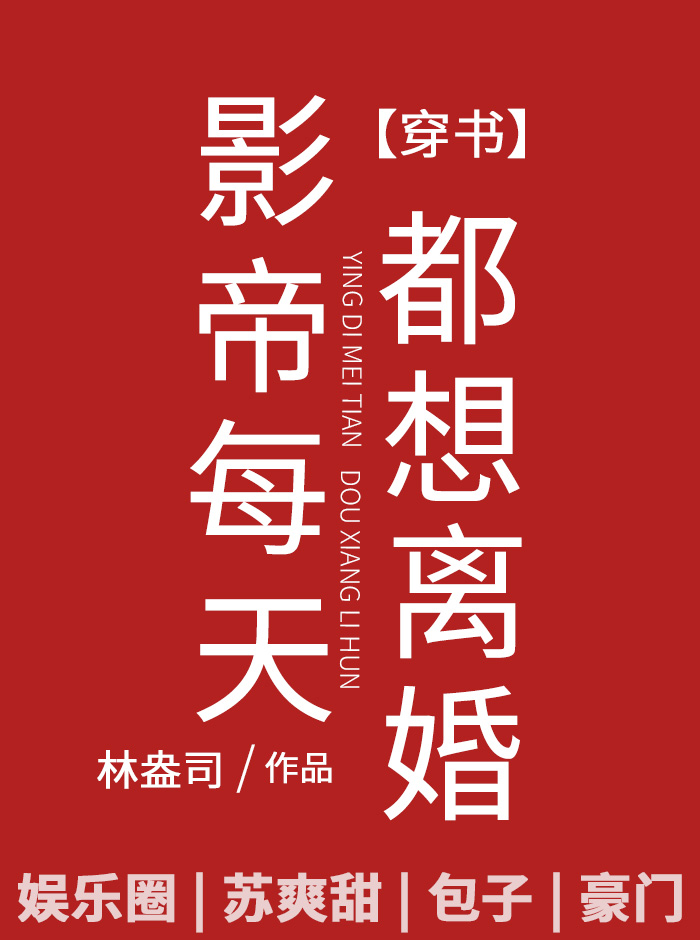

El emperador de cine Ling Qing transmigró y se encontró en el extremo receptor del abuso de escoria de sangre de perro viejo y debe separarse de la escoria gong Yu Chen antes de entrar en un ciclo de embarazo y aborto espontáneo.
Ling Qing decidió que debía negociar un acuerdo de divorcio.
Yu Chen nació como un hombre rico y apuesto con innumerables hombres y mujeres, y no pidió matrimonio, sino que se casó con Ling Qing, que era inútil excepto por su rostro.
"¿Amor verdadero?" Sus amigos se burlaron.
Yu Chen estaba disgustado: “Qué broma. Si lo toco entonces debo ser un perro”.
Ling Qing estaba encantado. Genial, debería ser fácil divorciarse de esta manera.
Sin embargo, pasó un día, pasaron dos días y Yu Chen nunca estuvo dispuesto a divorciarse.
Unos meses más tarde, Ling Qing terminó de filmar y regresó a casa para escuchar: “¿Por qué creo que este actor mira a Ling Qing con los ojos equivocados? Joder, no le gustará Ling Qing, ¿verdad? ¡Esta rana quiere comer carne de cisne pero no es rival!
Amigo: "Él no es digno, ¿eres tú digno?"
Yu Chen: "¡Él es mi esposa, somos la pareja perfecta!"
Ling Qing:??? ¿No es eso lo que dijiste al principio?